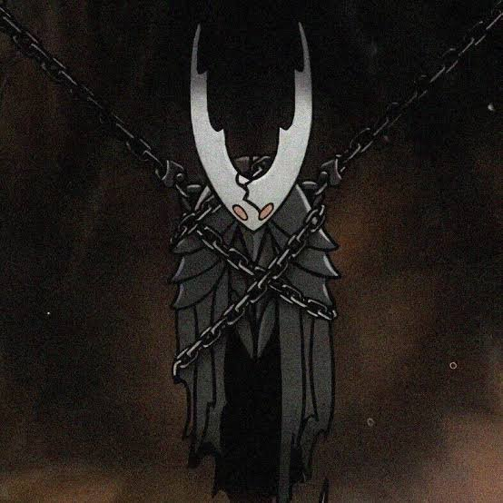
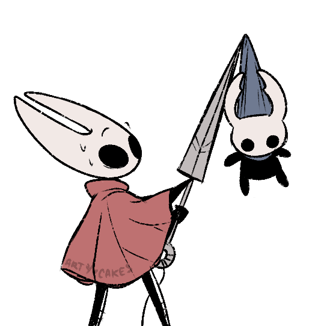

2. O Hollow Knight Quem é: Outro dos Vasos criados pelo Rei Pálido — considerado o “escolhido”. Importância: Ele foi selado dentro do Templo do Ovo Negro para conter a Infecção, mas falhou parcialmente. Relação: É o “irmão” do Cavaleiro.
3. O Rei Pálido (Pale King) Quem é: O antigo rei de Hallownest. Importância: Criou os Vasos (inclusive o Cavaleiro e o Hollow Knight) para deter a Infecção trazida pelo Radiance. Destino: Desapareceu misteriosamente após o colapso do reino.

4. A Radiância (The Radiance) Quem é: Uma antiga divindade dos insetos, de luz e sonho. Importância: Origem da Infecção que corrompe Hallownest. Objetivo: Retomar o controle sobre os insetos que antes a adoravam.

5. Hornet Quem é: Filha do Rei Pálido com Herrah, a Besta (uma das Três Sonhadoras). Importância: Guardiã de Hallownest e meio-irmã do Cavaleiro. Presente em: Hollow Knight e será protagonista de Silksong.
